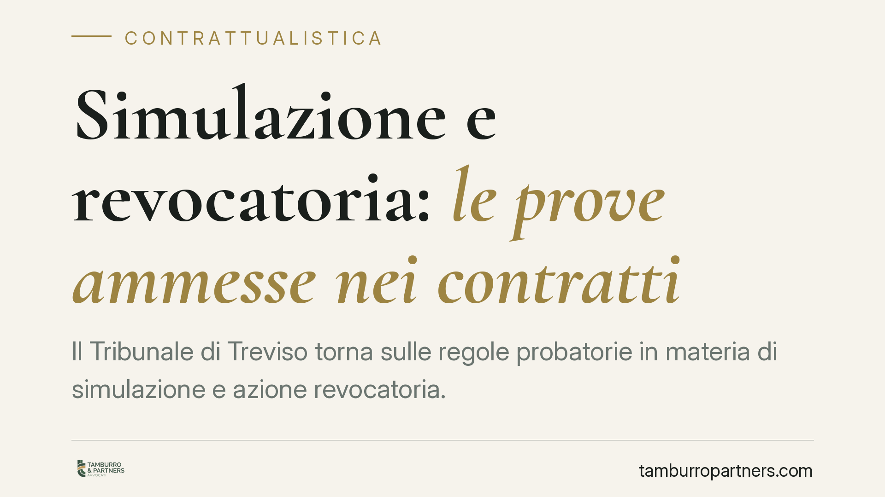

Simulazione e revocatoria: le prove ammesse nei contratti
Il Tribunale di Treviso torna sulle regole probatorie in materia di simulazione e azione revocatoria. La distinzione non è teorica: da chi propone la domanda e con quale finalità dipende l'ammissibilità di testimoni e presunzioni. Un tema decisivo per creditori, terzi ed eredi che intendono contestare un contratto apparente o pregiudizievole.

Il caso
Il Tribunale di Treviso, terza sezione, si è pronunciato su un profilo che genera frequenti errori strategici: le prove utilizzabili per dimostrare la simulazione di un contratto e quelle ammesse nell'azione revocatoria.
Sono istituti diversi. La simulazione ricorre quando le parti stipulano un contratto che non vogliono realmente (simulazione assoluta) oppure ne vogliono uno diverso da quello apparente (simulazione relativa). L'azione revocatoria, invece, consente al creditore di rendere inefficace nei suoi confronti l'atto con cui il debitore ha ridotto la propria garanzia patrimoniale.
La differenza incide direttamente sul piano probatorio, ed è qui che molte cause si perdono.
Inquadramento normativo
Il punto di partenza è l'art. 2722 del Codice civile: la prova per testimoni non è ammessa per dimostrare patti aggiunti o contrari al contenuto di un documento, quando si sostiene che tali patti siano stati stipulati prima o contemporaneamente al documento stesso.
A questa regola si affiancano due deroghe. L'art. 2724 c.c. ammette la prova testimoniale quando vi è un principio di prova scritta, quando la parte è stata nell'impossibilità di procurarsi una prova scritta, o quando ha perso senza colpa il documento. L'art. 2725 c.c. limita ulteriormente la testimonianza nei casi in cui la forma scritta sia richiesta a pena di nullità o per la prova stessa del contratto.
La giurisprudenza distingue in base a chi agisce. Le parti contraenti che vogliono far valere la simulazione tra loro incontrano i limiti degli artt. 2722 e 2725 c.c.: non possono di regola servirsi di testimoni e presunzioni. I terzi e i creditori, essendo estranei all'accordo simulatorio, possono invece provare la simulazione con ogni mezzo, comprese testimonianze e presunzioni. La ragione è pratica: chi non ha partecipato all'accordo non poteva precostituirsi una prova scritta.
Implicazioni pratiche
La posizione processuale determina l'arsenale probatorio disponibile. Chi imposta la domanda senza considerare questo aspetto rischia di vedersi dichiarare inammissibili le prove decisive.
Per il creditore che sospetta un atto simulato o pregiudizievole, la libertà probatoria è ampia. Può ricostruire l'operazione attraverso indizi: rapporto di parentela tra le parti, sproporzione del prezzo, mancato pagamento effettivo, tempistica dell'atto rispetto al sorgere del debito.
Per le parti che litigano sulla natura simulata del proprio contratto, invece, la strada è più stretta. Serve un documento — la cosiddetta controdichiarazione — o almeno un principio di prova scritta che apra alla testimonianza.
Gli eredi meritano attenzione particolare. Quando agiscono per tutelare un proprio diritto autonomo (ad esempio la quota di legittima) sono trattati come terzi, con la conseguente libertà di prova. Quando invece subentrano nella posizione del defunto contraente, ne ereditano anche i limiti probatori.
Nell'azione revocatoria il quadro cambia ancora: qui non si discute della veridicità dell'atto, ma del pregiudizio arrecato alla garanzia patrimoniale e della consapevolezza del debitore. Presunzioni e indizi hanno spazio ampio per dimostrare l'elemento soggettivo.
Cosa fare in concreto
- Qualifica la tua posizione prima di agire: parte, terzo, creditore o erede. Da questo dipende quali prove potrai usare.
- Recupera ogni documento utile — controdichiarazioni, corrispondenza, movimenti bancari — soprattutto se agisci come contraente e non puoi contare sulla testimonianza.
- Raccogli gli indizi in modo ordinato: se sei creditore o terzo, costruisci il quadro presuntivo con elementi gravi, precisi e concordanti.
- Scegli l'azione corretta: simulazione e revocatoria tutelano interessi diversi e possono cumularsi, ma richiedono impostazioni distinte.
- Verifica i termini: l'azione revocatoria ordinaria si prescrive in cinque anni dall'atto. Consigliamo di valutarli con anticipo per non compromettere la tutela.
Conclusioni
La pronuncia del Tribunale di Treviso ribadisce un principio consolidato ma spesso trascurato: la prova non è mai neutra rispetto a chi la offre. Impostare correttamente la domanda, tenendo conto della propria posizione, è il primo passo per una tutela efficace.
Contributo informativo a cura di Tamburro & Partners - Avv. Giuseppe Tamburro. Non costituisce parere legale.
Ogni contratto ha il suo equilibrio.
Se vuoi una revisione delle clausole o una redazione su misura, scrivi allo studio. Ti rispondiamo entro un giorno lavorativo.